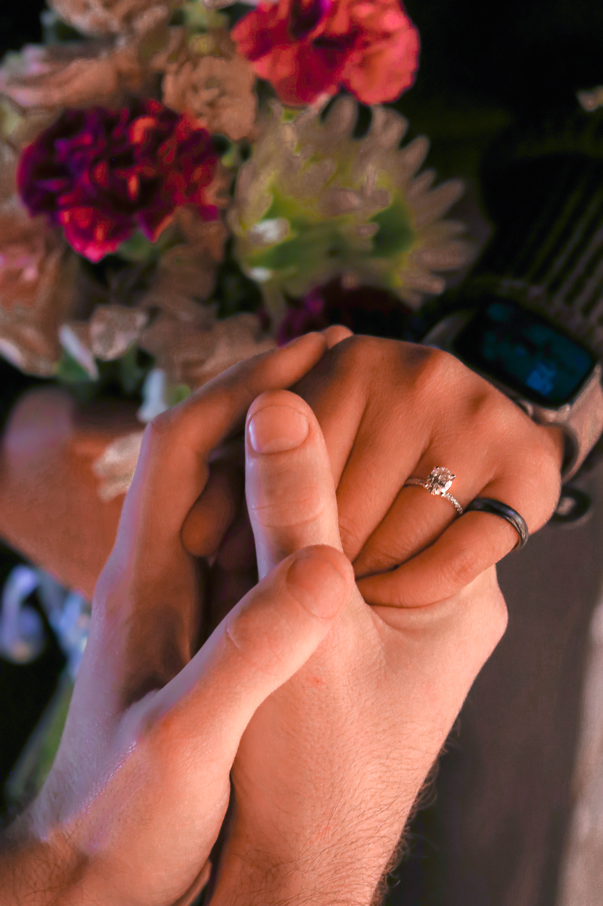

My fiance is in cyber-security so he know a lot about computers and their funtions. Through out our four years togther he would talk to me about his days at work and the things he has delt with. He is also doing his masters degree on the side and talks to me about his homework. I have always found what he does interesting, but not something I could see myself doing. One day we were talking and he brought up python and javascript. He talked about the different things you could do with the different coding styles they have. I found that interesting and started watching videos on it. I eventually got on codeacademy to learn python but the pace I was learning at was too slow for me. I started looking into bootcamps and found Coding Temple.
My background
I've lived in Redlands, San Bernardino and Perris. I grew up with my mom, dad, sister and two brothers. My sister is the oldest, then my older brother, then me, and then my younger brother.
I grew up very close to my siblings. My parents always told us we need to take care of eachother. Whenever one of us needs help with anything we help eachother.
Same with my parents if they need help with anything, we all help when we can. My family helped me grow into the woman I am today. They helped me learn very important lessons in life.
Recently

My engagment ring
I recently got engaged to an amazing man. We have been together for 4 years. He proposed February 4th. I work at Big 5 Sporting Goods as a manager. I've worked there for a year and six months. The job is easy and the work enviornment is the best I've ever worked with. I am however going to be leaving that job soon. I'm going to be putting all my focus and energy into this bootcamp.